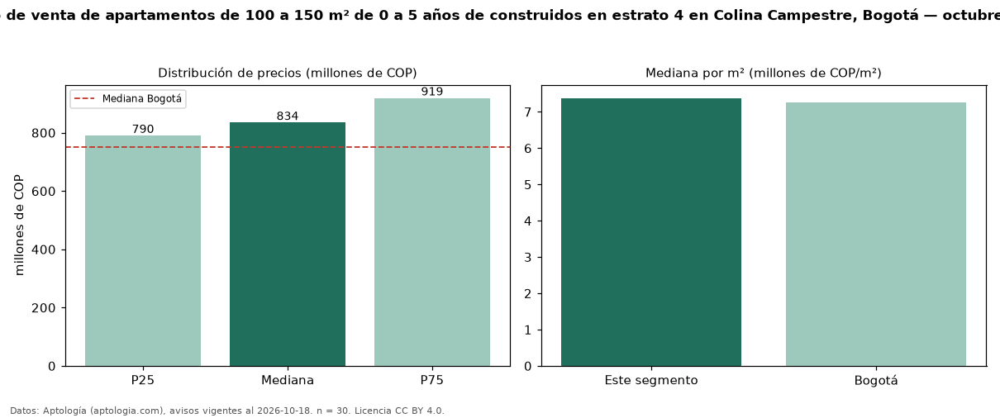

Precio de venta de apartamentos de 100 a 150 m² de 0 a 5 años de construidos en estrato 4 en Colina Campestre, Bogotá — octubre 2026
COP 834 millones es el precio mediano de apartamentos de 100 a 150 m² de 0 a 5 años de construidos en estrato 4 en venta en Colina Campestre (localidad de Suba), Bogotá (n = 30 avisos). Prácticamente coincide con la mediana de los apartamentos de 100 a 150 m² en estrato 4 en venta de Colina Campestre (COP 850 millones, n = 69); este segmento reúne el 43 % de esos avisos. Por metro cuadrado, la mediana es COP 7,38 millones/m² (n = 30), 8 % por encima de los apartamentos de 100 a 150 m² en estrato 4 en venta de Colina Campestre (COP 6,83 millones/m²). El área mediana anunciada es 121 m². El segmento con más oferta es el de 3 o más habitaciones (29 avisos, mediana COP 830 millones). La administración mediana declarada es COP 564.000 al mes (n = 23). La mediana de todos los apartamentos en venta de Bogotá es COP 750 millones (+11 % de diferencia). La mitad central de los avisos va de COP 790 millones a COP 919 millones (razón 1,2), una dispersión baja. Datos: Aptología (aptologia.com), CC BY 4.0 — https://www.aptologia.com/venta/bogota/colina-campestre. Archivos: PDF, CSV con las cifras y gráfica PNG.

| Avisos únicos | 30 |
|---|---|
| Percentil 25 | COP 790.000.000 |
| Mediana | COP 834.500.000 |
| Percentil 75 | COP 918.750.000 |
| Mediana por m² | COP 7.377.844 |
Fuente: avisos vigentes de portales inmobiliarios recopilados por Aptología, deduplicados (mínimo 30 avisos únicos por celda). Precios pedidos, no cerrados. Fecha: 2026-10-18.